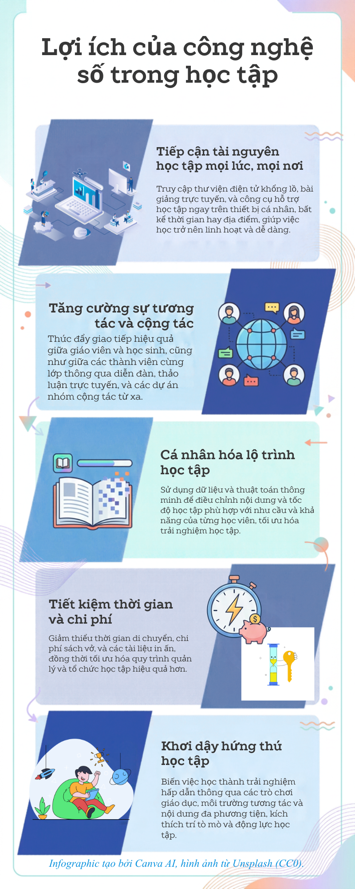

NA
Trang thông tin cá nhân
Huỳnh Nhật Ái
Sinh viên Truyền thông đa phương tiện · CT005_D03
Lab 05 · Portfolio cá nhân
Học hỏi, sáng tạo và chia sẻ
Xin chào! Đây là không gian giới thiệu bản thân và những sản phẩm số mình thực hiện trong quá trình học tập.
01
Tài liệu PDF
Tài liệu bài thực hành được nhúng trực tiếp để có thể đọc, phóng to và tải xuống ngay trên trang.
Mở PDF trong cửa sổ mới
02
Infographic
Một sản phẩm trực quan hóa nội dung bài học bằng hình ảnh và bố cục ngắn gọn.

Infographic của bài thực hành Lab 05.
03
Video YouTube
Video hướng dẫn được nhúng từ YouTube, giúp nội dung học tập sinh động và dễ theo dõi.